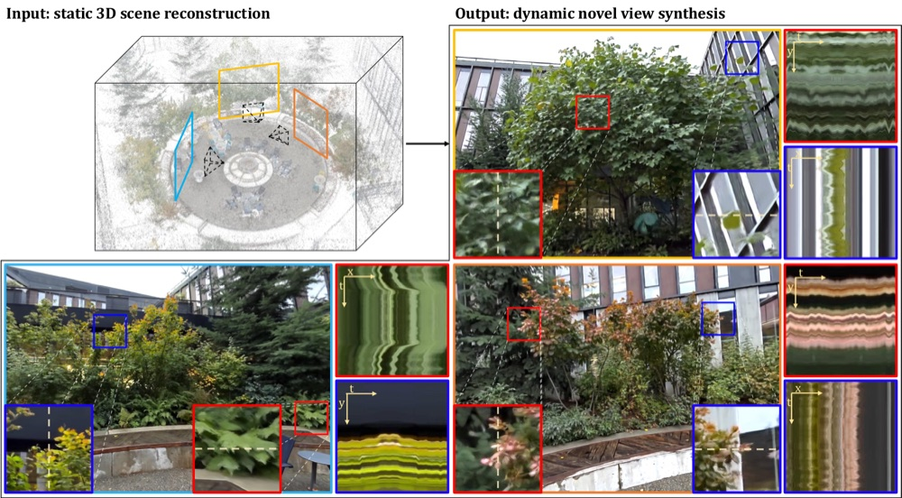
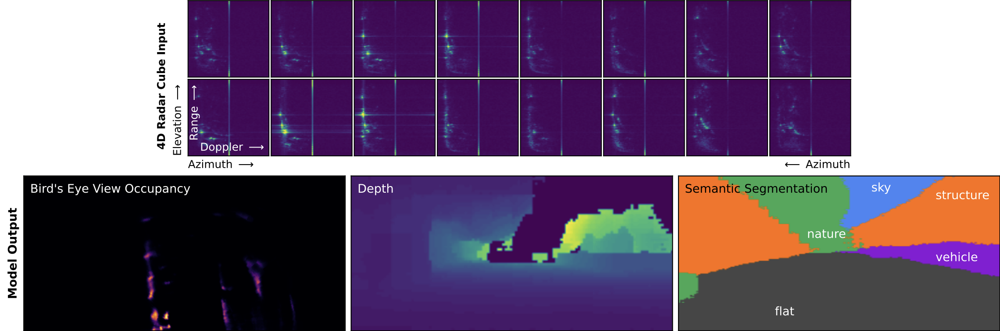
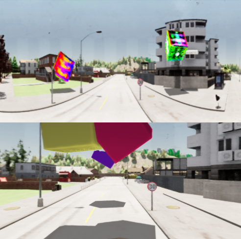
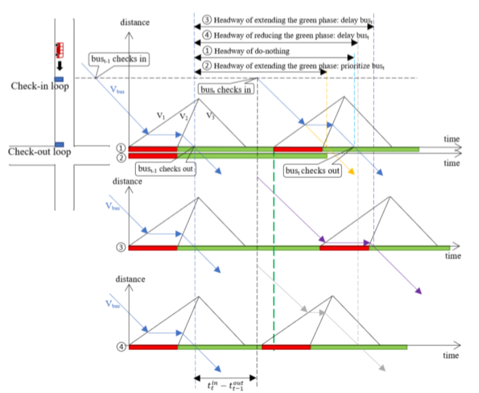

I am a fourth year PhD student at CMU Robotics Institute, co-advised by Prof. Matthew O'Toole and Prof. Deva Ramanan, researching on leveraging physics and generative priors for 3D/4D scene reconstruction. I obtained a Masters in Computer Vision at CMU as well.
I did my undergraduate studies in the
University of Toronto majoring in Computer Engineering, where I was fortunate to work with Prof. Florian Shkurti on self-driving adversarial attack with differentiable rendering. I also explored research in transit signal priority with Prof. Amer Shalaby and content ranking with ML with Prof. Scott Sanner.
Spring–Summer 2018 — Exchange semester, Kyoto University
2015–2020 — BASc in Computer Engineering, University of Toronto
Research
I'm interested in 3D/4D reconstruction of the world. I work at the intersection of computer vision, computer graphics, and computational photography. My research spans a wide range of topics including reconstructing water sceneries from casual captures, generative relighting, radar-camera multimodal reconstruction and simulation, neural head synthesis etc.
LightCrafter: PBR-Conditioned Video Diffusion Refinement for Controllable and Consistent Relighting
Zixin Guo, Yehonatan Litman, Yifeng He, John Miller, Chuhan (Sally) Chen*, Deva Ramanan
arXiv, 2026
arXiv
/
project page
We combine physically based rendering with video diffusion refinement to enable controllable, temporally consistent relighting. The PBR rendering provides accurate lighting control, while diffusion priors restore complex effects such as global illumination.
* Mentor of the project

AniGS: Bridging Rendering and Diffusion Prior for 3D Scene Animation
Yen-Chi Cheng, Chen Gao, Chuhan (Sally) Chen, Tuotuo Li, Rajvi Shah, Ayush Saraf, Changil Kim, Liangyan Gui, Alexander Schwing, Johannes Kopf, Hung-Yu Tseng
arXiv, 2026
arXiv
We animate static 3D Gaussian Splatting scenes by combining a time-conditioned deformation field with a pretrained video diffusion model. AniGS adds natural ambient motion—such as vegetation movement—while preserving rigid structures and restricting changes to desired regions.
Eulerian Motion Reconstruction for Water Scenery Chuhan (Sally) Chen, Yen-Chi Cheng, Ayush Saraf, Rajvi Shah, Tuotuo Li, Johannes Kopf, Chen Gao, Hung-Yu Tseng, Deva Ramanan, Matthew O'Toole, Changil Kim
arXiv, 2026
arXiv
/
project page
We reconstruct looping 4D water scenes from a single non-looping video using a periodic Eulerian motion field and Gaussian splats. A residual time-varying term captures stochastic dynamics, enabling photorealistic novel-view animation of water scenery.
BrickWright: Agentic Creation of Physically Feasible Brick Builds
Ava Pun, Kevin Dai, Chuhan (Sally) Chen, Maxwell Jones, Ruixuan Liu, Kangle Deng, Changliu Liu, Maneesh Agrawala, Deva Ramanan, Jun-Yan Zhu
arXiv, 2026
arXiv
/
project page
We present an agent framework for generating physically feasible LEGO builds from text or image prompts. BrickWright combines an ergonomic brick assembly toolkit with automatic structural validation, achieving fully valid assemblies while preserving prompt adherence.
RadarSim: Simulating Single-Chip Radar via Multimodal Neural Fields Chuhan (Sally) Chen, Tianshu Huang, Akarsh Prabhakara, Chaithanya Kumar Mummadi, Zhongxiao Cong, Anthony Rowe, Matthew O'Toole, Deva Ramanan
3DV, 2026
project page
/
arXiv
We design a multimodal neural field pipeline that unifies radar and RGB-camera input to simulate high-resolution radar date from low-resolution single-chip radar input while demonstrate ability for occupancy sensing, scale estimation, and more accurate geometry reconstruction for textureless regions.

Towards Foundational Models for Single-Chip Radar
Tianshu Huang, Akarsh Prabhakara, Chuhan (Sally) Chen, Jay Karhade, Deva Ramanan, Matthew O'Toole, Anthony Rowe
ICCV, 2025 (Oral Presentation)
project page
/
arXiv / video
With enough training data, transformer models can extract 3D outputs of surprising quality from indexpensive, low-resolution single-chip radar. These models scale well with additional training data, and can generalize across different settings and be readily fine tuned for new tasks.
Implicit Neural Head Synthesis via Controllable Local Deformation Field Chuhan (Sally) Chen, Matthew O'Toole, Gaurav Bharaj,Pablo Garrido
CVPR, 2023
project page
/
arXiv / video
We model multiple implicit deformation fields with local semantic rig-like control via 3DMM-based parameters and
representative facial landmarks, and propose a novel local control loss and attention mask mechanism that renders sharper locally controllable nonlinear
deformations than previous implicit monocular approaches, especially mouth interior, asymmetric expressions, and finer skin details.

Generating Transferable Adversarial Simulation Scenarios for Self-Driving via Neural Rendering
Yasasa Abeysirigoonawardena, Kevin Xie, Chuhan (Sally) Chen, Salar Hosseini, Ruiqi Wang, Florian Shkurti
Corl 2023,
Best Paper Award at RSS 2023 workshop "Towards Safe Autonomy: New Challenges and Trends in Robot Perception"
arXiv
We create differentiable simulators with NeRF where we insert objects in a differentiable way and learn the objects' position and texture (ie. adversarial attacks) that make a self-driving car deviate from its original path.

Deep Reinforcement Learning Two-Way Transit Signal Priority Algorithm for Optimizing Headway Adherence and Speed
Wenxun Hu, Hirotaka Ishihara, Chuhan (Sally) Chen, Amer Shalaby, Baher Abdulhai
IEEE Transactions on Intelligent Transportation Systems 2023, Annual Transportation Research Board Meeting, 2021
paper / poster
We proposes a dual-objective two-way Transit Signal Priority algorithm that concurrently optimizes transit delays and reliability (headway adherence) using Deep Reinforcement Learning. Further, the agents are enhanced with a coordination algorithm for an optimized solution balancing opposite directions. The algorithm reacts adaptively to real-time bus performance.
Some other interests
I'm interested in learning languages & linguistics in general. I speak Mandarin and English fluently, Japanese somewhat fluently (but have forgotten much due to lack of practice) and know some Latin (ahh all the conjugations..). Big thanks to Prof. Atsuko Sakaki - from her class I picked up some Classical Japanese, and now can read some classical text with the help of grammar books. Currently learning Spanish and Arabic and hope one day I can speak these languages fluently!! (Inshallah!) And lastly, I'm from Nanjing, China, so I also speak the Nanjingese dialect, rather sad to see this dialect disappearing and hopefully can contribute to maintaining it.